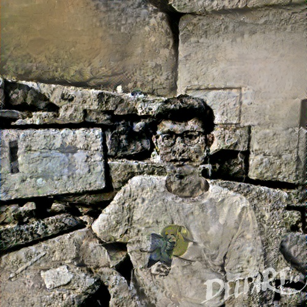

Weihai Shen
I'm currently a second-year CS master student at Arizona State University, former senior
1151 S. Forest Ave.
Tempe, AZ 85281
E-mail:
Social media: github; linkedin
Master of Computer Science July 2018∼May 2020 (expected)
GPA: 3.85/4.0
Completed: Statistical Machine Learning, Natural Language processing, Fundamentals of Statistical Learning, Perception in Robotics, Intro Theoretical Computer Science, Distributed Database Systems, Software Security, Data Visualization
Nanjing University of Posts and Telecommunications Nanjing, China
Bachelor of Geographic Information System July 2010∼June 2014
GPA: 89.3/100, Rank: 1/107
Weihai Shen; Junxiu Gao; Qi Tan; CN108920516A
Supervised by Dr. Ross Maciejewski VADER Lab
Watermarking on generative adversarial network Feb. 2019 ∼ May 2019
Supervised by Dr. Yezhou Yang
Senior Data Engineer June 2017∼June 2018
Data team
User growth team
Software Development Engineer April 2015∼June 2016
Knowledge search team
Software Development Engineer July 2014∼April 2015
Real estate team
Image Classification on Fashion-MNIST dataset
Using BERT for Qualitative Reasoning
Industrial decision-making platform Sep. 2018 ~ Dec. 2018
Supervised by Dr. George Runger
Software Development Engineer May ~ Aug. 2019
Email team
data engineer and software engineer at top tech companies in China: ByteDance Inc, Baidu Inc and 58 & Ganji Inc. I'm actively seeking PhD opportunity starting from fall 2020, full pdf version: Download .
Contact
Arizona State University1151 S. Forest Ave.
Tempe, AZ 85281
E-mail:
wshen24@asu.edu Social media: github; linkedin
Education
Arizona State University AZ, USAMaster of Computer Science July 2018∼May 2020 (expected)
GPA: 3.85/4.0
Completed: Statistical Machine Learning, Natural Language processing, Fundamentals of Statistical Learning, Perception in Robotics, Intro Theoretical Computer Science, Distributed Database Systems, Software Security, Data Visualization
Nanjing University of Posts and Telecommunications Nanjing, China
Bachelor of Geographic Information System July 2010∼June 2014
GPA: 89.3/100, Rank: 1/107
Patents
The big data real-time analysis platformWeihai Shen; Junxiu Gao; Qi Tan; CN108920516A
With the advent of the big data era, one of the most crucial issues the internet companies have toface is how to obtain real-time behavior information of users, which has given birth to real-timebig data analysis. The traditional architecture simply analyzes data based on offline data(likeHive or other warehouse platforms). However, traditional offline analysis cannot guarantee thetimeliness of data. In this industrial patent, we creatively propose an architecture to provideusers with real-time statistic information, even with huge data
[slides] Research experience
Research in the scientific Visualization ToolKit Sep.2019 ∼ -Supervised by Dr. Ross Maciejewski VADER Lab
- Implemented a WebSocket filter in the Topology-Toolkit (https://topology-tool-kit.github.io/) to enable real-time data transfer of large datasets between browser and server memory
- Provided an out-of-box JavaScript API to receive and send object data asynchronously
- Used histogram-based visualizations to guide users to select important isovalues based the implemented WebSocket filter
- Focused on Data Visualization and Data Analytics research area
Supervised by Dr. Yezhou Yang
- Implemented a sample code to visualize the insights from low dimensions
- Implemented the Fast Gradient Sign Attack to impose an adversarial attack on an MNIST classifier
- Attempted a new structure to hide a unique watermarking into generative adversarial networks for intellectual property protection
- Focused on Adversarial Attack research area
Work experience
ByteDance Technology Co Ltd.Beijing, ChinaSenior Data Engineer June 2017∼June 2018
Data team
- Led the team to design and accomplish a real-time big data analysis platform that can provide users Daily Launch User and Daily New User information on a large data using no-sql, spark, hbase and python
- Designed and implemented a data warehouse to monitor the long-term retention rate of users
- Rewrote distributed real-time processing code and made use of Flink to replace Storm framework
User growth team
- Built an intelligent ads platform integrating multiple ads engine APIs to control thousands of keywords for user growth marketing
- Implemented different models and strategies to boost user growth
Software Development Engineer April 2015∼June 2016
Knowledge search team
- Designed and constructed a big-data tool to analyze the performance of each updated version
- Participated in the application performance optimization project, especially in the aspect of data storage optimization via no-sql and distributed deployment
- Implemented and maintained a php-based API service on a daily basis
Software Development Engineer July 2014∼April 2015
Real estate team
- Improved the website’s search engine ranking greatly by optimizing metadata, publishing relevant contents and improving access speed
- Redesigned the indices and
rding of MySQL to accelerate database access speed - Implemented and maintained iterative development on a daily basis
Academic projects
Individual VIS projects in D3All of those individual projects are completed in Data Visualization course. I do not include any group projects here.


In this project, we implement a 3-layer fully-connected neural network(without any deep learn-ing libraries like TensorFlow, Keras etc) to classify the fashion-MNIST dataset using No Mo-mentum, Polyaks classical momentum, Nesterovs Accelerated Gradient, RmsProp and ADAMalgorithms
[ report]
[ github]Using BERT for Qualitative Reasoning
In this project, we used BERT, Bi-directional Encoder Representations from Transformers,which is a newly proposed language representation model, to solve qualitative reasoning prob-lem. BERT has been proved to be very powerful that obtains the state-of-the-art results onalmost all natural language processing tasks
[ report]
[ github]Industrial decision-making platform Sep. 2018 ~ Dec. 2018
Supervised by Dr. George Runger
- Implemented this project from scratch to online using MVC software design pattern
- Implemented an out-of-box script to import data from CSV to AWS database instances
- Provided configuration center to make the program more scalable
Summer Internship
ByteDance Technology Co Ltd. Palo Alto, USASoftware Development Engineer May ~ Aug. 2019
Email team
- Implemented the email label system to keep users' inbox neat, tidy and easy-to-manage
- Optimized MySQL slow queries for speed and performance
- Implemented and maintained a Go-based RPC service on a daily basis

wordcloud based on current page
© Designed by Weihai Shen [ code]